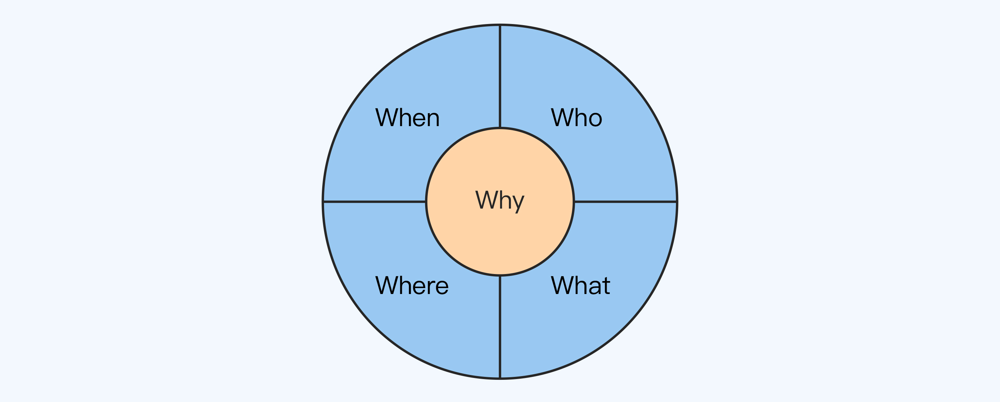

5W1H8C1D分析法
用 5W1H+8C 的思路来分析和理解业务功能，并且在功能上线后熟悉运行数据（1D）。
5W
5W 指的是 5 个不同的英文单词：When（何时）、Where（何地）、Who（何人）、What（何事）、Why（何因），代表需求产生的背景和功能上线后的运行环境，类似于操作系统上下文（Context）的概念。
首先，客户需求背后的真正问题才是关键。
客户遇到问题之后，往往会基于自己的经验、理解和学识等给出一个解决方案，然后说这是他们的需求。
理想情况是客户非常在行，最好就是软件分析师出身的，能够清晰地分析问题并提出合理的解决方案作为需求。
但现实情况却往往不妙，很多客户对软件的理解可能仅仅停留在 Windows 或者微信上，甚至有些客户认为你会变魔法，只要他说一个“简单的”需求，你就能变出他想要的！
所以，如果我们不主动挖掘需求背后的 5W，就算完美地实现了客户的需求，也可能没有真正解决客户的问题。
其次，理解需求背景有助于设计更好的方案。
需求背景会隐含很多需求相关的信息，而这些信息会影响我们的方案设计。
5个W都是什么?
第一个 W 是 When，代表和时间相关的信息
常见的有：
- 季节信息：春夏秋冬等。
- 日期信息：节日、假日等。
- 作息时间：白天、晚上、凌晨、早晨、上午、下午、晚上、深夜等。
第 2 个 W 是 Where，代表和地点相关的信息
常见的有：
- 国家、地区：不同的国家和地区有不同的文化、风俗、制度等。
- 室内、室外、街道。
- 建筑物。
- 交通工具，比如上下班做地铁，开车等。
第 3 个 W 是 Who，代表和参与者相关的信息
常见的参与者信息有：
- 投资者、管理者。
- 使用者、维护者。
- 监督者、评估者：包括政府机构、监管机构等。
- 交互者：与当前系统交互的其他系统。
第 4 个 W 是 What，代表客户想要的输出结果
比如一个文档、一份报告、一个图片、一个系统和一个产品等。一般情况下，这也是我们看到的最原始的需求。
第 5 个 W 是 Why，代表客户遇到的问题
问题是客户提出需求的驱动力，只要是客户觉得不爽的地方都属于问题的范围。
在这 5 个 W 中，Why 是最关键的，因为只有真正了解了客户提出需求的驱动力，才能真正解决客户的问题，而只有真正解决了客户的问题，那么客户才会真正满意。
5W关系图

1H
H 代表 How，也就是如何，它和 5W 共同组成了 5W1H 分析法，又叫六何分析法。
在分析和理解业务的时候，How 不是指设计方案，而是指业务需求的处理逻辑。
8C
5W1H 关注的是需求的功能属性，而 8C 关注的是需求的质量属性。
需求最终是不是真正以合理地方式实现了，既要看功能属性是否满足需求，也要看质量属性是否符合要求，两者缺一不可！
所以还需要加一些约束条件（Constraint），也就是我所说的 C。
- 性能
性能是指系统提供相应服务的效率，一般包括响应时间和吞吐量，是很多系统架构设计的关键约束条件之一。 - 成本
成本是指为了实现系统而需要付出的代价，也是很多系统架构设计的关键约束之一。 - 时间
时间是指客户要求的交付时间，它会影响项目的进度安排，从而会影响项目的设计方案。 - 技术
技术是指客户指定的技术。 - 可靠性
可靠性是指系统长时间正确运行的能力。 - 安全性
安全性是指对信息安全的保护能力。 - 合规性
合规性是指满足各种行业标准、法律法规、规范等，比如 3C、SOX、3GPP、ITUT 等。 - 兼容性
兼容性是指我们提供给客户的系统与客户其它已有的系统兼容的能力。
1D
D 代表 Data，也就是数据，反映了业务上线之后的效果（Result）。
常见的 Data 包括两个方面：
一是业务效果，比如 DAU、MAU、活动参与人数、订单数、成交量、成交额和运营效率等。
二是系统效果，比如峰值 TPS、接口性能、响应时间、崩溃率、可用